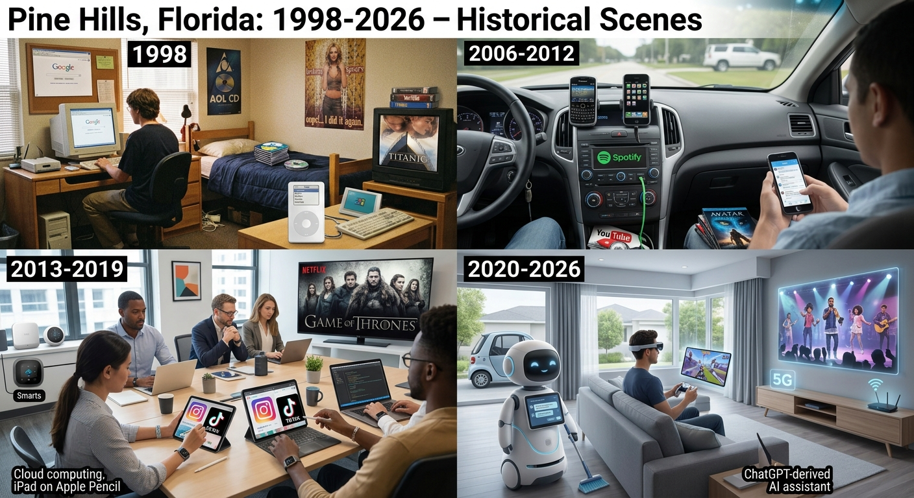

CULTURAL ERAS:1998-2026:
Cultural Eras Timeline:

1998-2004: The Digital
Beginning:
Music:
CDs, radio, music television, and early MP3
files influenced how people discovered and listened to music.
Technology:
Dial-up internet, desktop computers, early cell
phones, and search engines became increasingly important parts of
everyday life.
Fashion:
Y2K fashion featured bright colors, denim,
futuristic styles, low-rise clothing, and celebrity influences.
Entertainment:
DVDs, cable television, video rental stores,
and movie theaters were major sources of entertainment.
2005-2011: The Rise of
Social Media:
Music:
The iPod, digital downloads, and online music
services changed how people purchased and also organized music.
Technology:
Smartphones began becoming more common, while
laptops, digital cameras, and faster internet changed everyday
communication.
Fashion:
Fashion trends were strongly influenced by
music, television, celebrities, and emerging online communities.
Entertainment:
Online video platforms made it possible for
people to create and share their own entertainment with audiences
around the world.
Social Media:
Early social networking platforms introduced
new ways from people to communicate,share photographs,post
updates, and connect with friends.
2012-2019: The Smartphone
and Streaming Era:
Music:
Music streaming made it easier to access large
libraries of songs without purchasing individual albums or songs.
Technology:
Smartphones became powerful tools for
communication, photography, entertainment, shopping and social
networking.
Fashion:
Social media platforms helped trends spread
quickly and increased the influence of online creators and
celebrities.
Entertainment:
Streaming and on-demand video changed how
audiences watched movies and television programs.
Social Media:
Platforms such as Instagram, Snapchat, and
other social networks influenced communication, entertainment, and
popular culture.
2020-2026: The AI and
Digital Culture Era:
Music:
Streaming continues to play a major role in
music discovery, while digital tools allow artists to create,
distribute, and promote music online.
Technology:
Artificial intelligence,smartphones,cloud
computing, and digital platforms continue to influence how people
work,communicate and create.
Fashion:
Social media and online creators continue to
influence fashion trends, while older styles are frequently
revisited and reinterpreted.
Entertainment:
Streaming, short-form video, gaming and creator
platforms have become important parts of modern entertainment.
Social Media:
Short-form video and creator platforms have
become major sources of entertainment,communication, and cultural
trends. This is the TIKTOK era, Instragram, Facebook & X
(formerly known as Twitter) era.